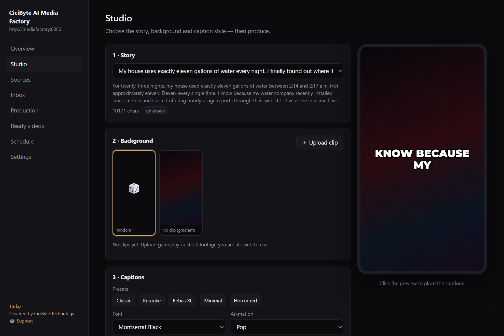
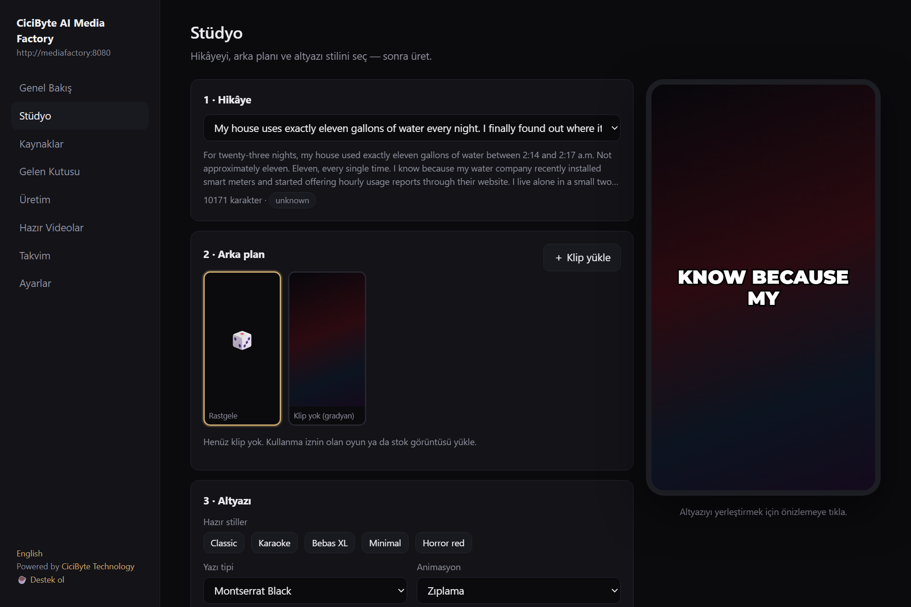
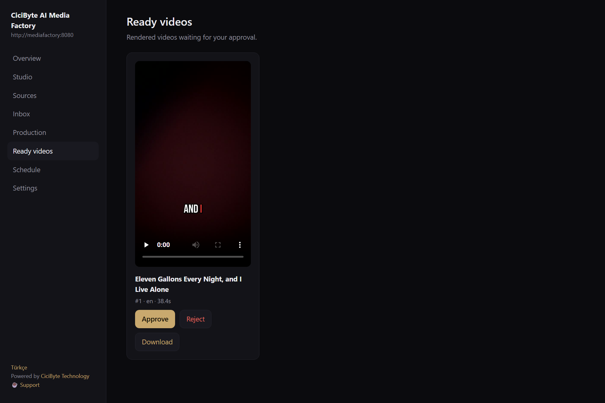
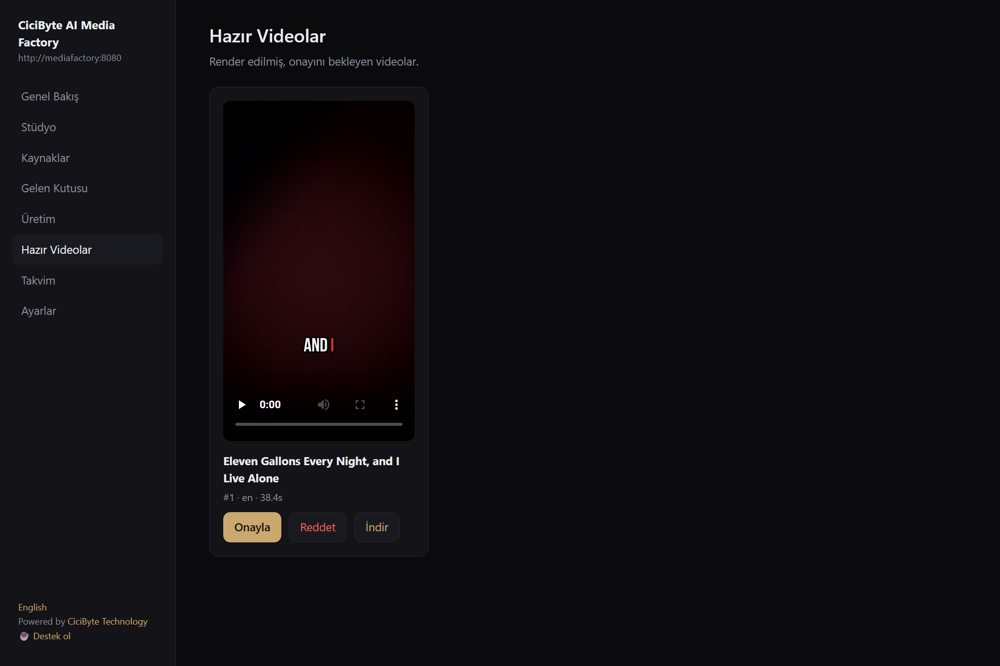
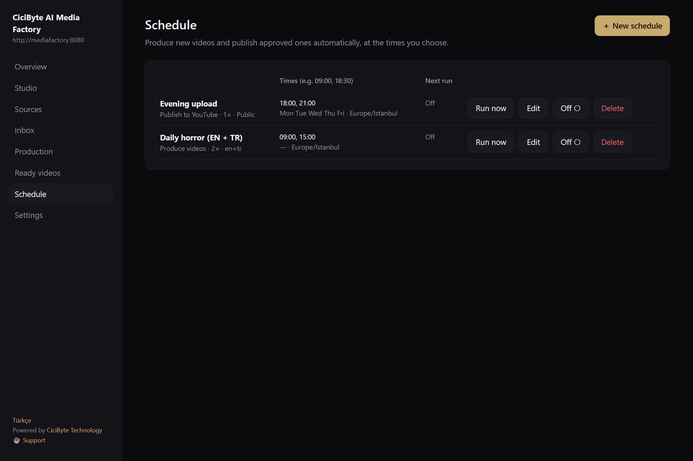
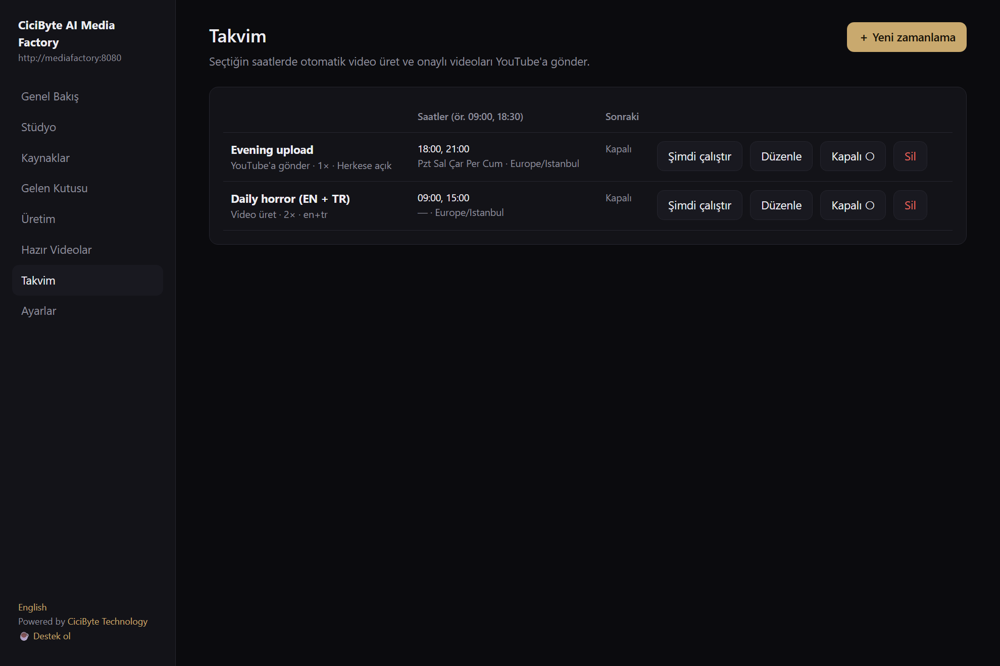
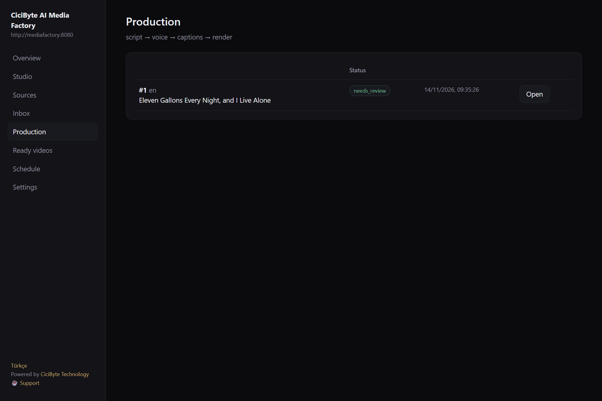
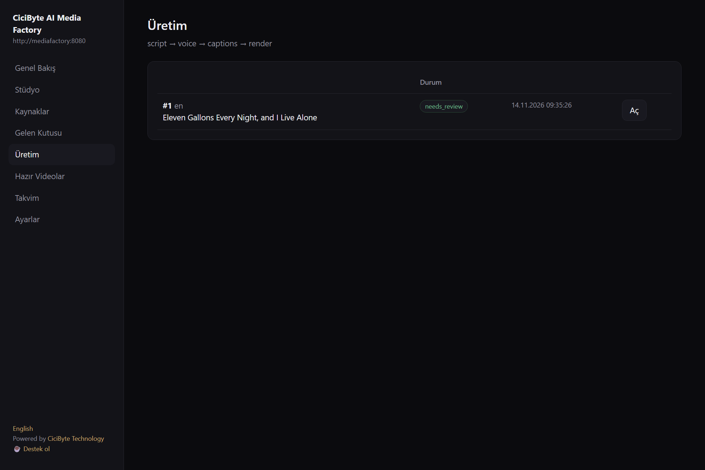

v0.3.1 · self-updating Windows appv0.3.1 · kendini güncelleyen Windows uygulaması
CiciByte AI Media Factory
Your own AI Shorts factory. It collects stories from sources you choose, writes an original script with the AI you connect, adds voice and styled captions, renders a 9:16 video — and publishes to YouTube only after you approve, right away or on a schedule.Kendi AI Shorts fabrikan. Seçtiğin kaynaklardan hikâye toplar, bağladığın yapay zekâyla özgün senaryo yazar, ses ve stilli altyazı ekler, 9:16 video üretir; YouTube'a yalnızca senin onayınla, hemen ya da zamanlayarak gönderir.
A real Short from the factory: AI script, Piper voice, word-by-word captions.Fabrikadan gerçek bir Short: AI senaryo, Piper ses, kelime kelime altyazı.
A quick tourKısa bir tur
Real screens from the Windows app connected to a home server. Everything heavy — AI, voice, rendering — runs on the server; the app is your control room.Ev sunucusuna bağlı Windows uygulamasından gerçek ekranlar. Ağır işlerin hepsi (AI, ses, render) sunucuda çalışır; uygulama senin kontrol odan.
CiciByte AI Media Factory








Studio — pick the story and a background clip, style the captions (font, colours, position, karaoke highlight) and watch a live preview before you produce.Stüdyo — hikâyeyi ve arka plan klibini seç, altyazıyı biçimlendir (yazı tipi, renk, konum, karaoke vurgusu), üretmeden önce canlı önizlemede gör.
Ready videos — every video waits for your approval. Approve, reject, download, or send to YouTube now or at a time you pick.Hazır videolar — her video onayını bekler. Onayla, reddet, indir ya da YouTube'a hemen veya seçtiğin saatte gönder.
Schedule — “make 2 videos every day at 09:00” and “publish one approved video at 18:00 on weekdays”, in your own time zone.Takvim — “her gün 09:00'da 2 video üret”, “hafta içi 18:00'de bir onaylı videoyu yayınla”; kendi saat diliminde.
Production — follow each job through script, voice, captions and render, with logs, cancel and retry.Üretim — her işi senaryo, ses, altyazı ve render aşamalarında izle; log, iptal ve yeniden deneme.
What it doesNe yapar
One pipeline from source to Short, under your control at every step.Kaynaktan Shorts'a tek bir hat; her adımda kontrol sende.
AvailableHazır
Your sourcesKaynakların
Reddit, RSS/Atom, web pages, your own story or file (.txt, .md, .pdf, .docx) — or let the AI write a brand-new story on any topic, in English or Turkish. Deduplicated, rate-limited, with a rights status on every story.Reddit, RSS/Atom, web sayfaları, kendi hikâyen ya da dosyan (.txt, .md, .pdf, .docx); istersen AI istediğin konuda Türkçe veya İngilizce yepyeni bir hikâye yazsın. Tekilleştirilir, istek sınırına uyulur, her hikâyenin hak durumu tutulur.
AvailableHazır
Bring your own AIKendi yapay zekân
Ollama, llama.cpp, 9router or any OpenAI-compatible endpoint. Ordered fallbacks per task, retries, local-first. Your keys stay encrypted on your server.Ollama, llama.cpp, 9router ya da OpenAI uyumlu her uç nokta. Görev başına sıralı yedekler, yeniden deneme, önce yerel. Anahtarların sunucunda şifreli kalır.
AvailableHazır
Original scriptsÖzgün senaryo
Sources are inspiration, not copy. The AI writes a new story with a hook, a twist and a follow call — plus title, description and tags.Kaynak ilhamdır, kopya değil. Yapay zekâ kanca, sürpriz son ve takip çağrısıyla yeni bir hikâye yazar; başlık, açıklama ve etiketlerle.
AvailableHazır
Voice & styled captionsSes ve stilli altyazı
Local Piper voices in English and Turkish. Captions with six fonts, colours, outline, position and animations — including word-by-word karaoke highlight.İngilizce ve Türkçe yerel Piper sesleri. Altı yazı tipi, renk, kontur, konum ve animasyonlu altyazı; kelime kelime karaoke vurgusu dahil.
AvailableHazır
9:16 video, your backgrounds9:16 video, senin arka planların
1080×1920 renders with ffmpeg on your hardware. Upload gameplay or stock clips to your own library, with an optional licence note per clip.ffmpeg ile kendi donanımında 1080×1920 render. Oyun ya da stok kliplerini kendi kütüphanene yükle; istersen her klibe lisans notu ekle.
AvailableHazır
Approve, then publishÖnce onay, sonra yayın
Connect your channels with your own Google client. Upload now, or schedule a time and let YouTube publish it. AI-content disclosure is set for you.Kanallarını kendi Google istemcinle bağla. Hemen yükle ya da saat seç, YouTube o saatte yayına alsın. Yapay zekâ içerik beyanı otomatik ayarlanır.
AvailableHazır
Schedule everythingHer şeyi zamanla
Recurring production and publishing slots by time of day and weekday, with optional auto-approve. Two languages at once make two separate videos.Saat ve güne göre tekrarlayan üretim ve yayın; istersen otomatik onay. İki dil seçince iki ayrı video üretilir.
AvailableHazır
Windows appWindows uygulaması
A real desktop app with an installer. It opens even when the server is offline, and you set the server address in Settings. No sign-in screen.Kurulum sihirbazlı gerçek bir masaüstü uygulaması. Sunucu kapalıyken bile açılır, sunucu adresini Ayarlar'dan girersin. Giriş ekranı yok.
NextSırada
Script editor & exact timingSenaryo düzenleme ve tam zamanlama
Edit the script before rendering, whisper-aligned word timing, voice picker, thumbnails and quality checks. Mac and Linux apps.Render'dan önce senaryoyu düzenleme, whisper ile kelime hizalama, ses seçimi, kapak görseli ve kalite kontrolü. Mac ve Linux uygulamaları.
02AI scriptAI senaryoOriginal, with your modelÖzgün, senin modelinle
03Voice & captionsSes ve altyazıPiper TTS, your caption stylePiper TTS, senin altyazı stilin
04VideoVideo9:16 render on your serverSunucunda 9:16 render
05ApproveOnayOr auto-approve by scheduleYa da takvimle otomatik
06YouTubeNow or scheduledHemen ya da zamanlı
Download & installİndir ve kur
Two parts: the server does the work (a Linux box, home server or VM), the app is how you drive it.İki parça: işi sunucu yapar (bir Linux makine, ev sunucusu ya da sanal makine), uygulama ile onu yönetirsin.
1
ServerSunucu
Linux with Docker Compose v2 and Tailscale. 4 CPU cores and 8 GB RAM are comfortable; no GPU needed. At the end the installer prints the address for the app.Docker Compose v2 ve Tailscale kurulu Linux. 4 çekirdek ve 8 GB RAM rahat yeter; GPU gerekmez. Kurulum sonunda uygulamaya yazacağın adresi gösterir.
git clone https://github.com/RealMrNovember/cicibyte-ai-media-factory.git
cd cicibyte-ai-media-factory
bash deploy/install.sh
There is no sign-in, so keep the server on a private network (Tailscale or your LAN), never the open internet. Details in DEPLOYMENT.md.Giriş ekranı olmadığı için sunucuyu özel ağda tut (Tailscale ya da yerel ağ); asla açık internete açma. Ayrıntılar DEPLOYMENT.md belgesinde.
2
Desktop appMasaüstü uygulaması
Install, open, and enter your server address under Settings → Server (for example http://my-server:8080).Kur, aç ve sunucu adresini Ayarlar → Sunucu kısmına yaz (ör. http://sunucum:8080).
The app and the server update themselves from GitHub. The installer is not code-signed yet, so Windows SmartScreen may ask you to confirm: “More info → Run anyway”.Uygulama ve sunucu kendilerini GitHub'dan günceller. Kurulum dosyası henüz imzalı değil; Windows SmartScreen onay isteyebilir: “Ek bilgi → Yine de çalıştır”.
Self-hosted & privateKendi sunucunda, gizli
Your sources, scripts, keys and videos stay on your machines. There is no CiciByte cloud, no account and no telemetry. You connect your own AI, your own Reddit and Google credentials, and you decide what gets published: you run it, you own it.Kaynakların, senaryoların, anahtarların ve videoların kendi makinelerinde kalır. CiciByte bulutu, hesap ya da telemetri yok. Kendi yapay zekânı, kendi Reddit ve Google bilgilerini bağlarsın; neyin yayınlanacağına sen karar verirsin: sen çalıştırırsın, senindir.
Roadmap & statusYol haritası ve durum
v0.1 goal: an original English (and optionally Turkish) Short, inspired by a source story, published to YouTube after your approval.v0.1 hedefi: bir kaynak hikâyeden ilham alan özgün bir İngilizce (istenirse Türkçe) Shorts'un, onayınla YouTube'a gönderilmesi.
FoundationTemelInstall, AI provider routing, job queue, backupsKurulum, AI yönlendirme, iş kuyruğu, yedekleme
DoneTamam
Sources & ingestionKaynaklar ve alımReddit, RSS, web, files; dedup, rights trackingReddit, RSS, web, dosya; tekilleştirme, hak takibi
DoneTamam
Production pipelineÜretim hattıScript, voice, captions, 9:16 render, background librarySenaryo, ses, altyazı, 9:16 render, arka plan kütüphanesi
DoneTamam
Panel, Studio & Windows appPanel, Stüdyo ve Windows uygulamasıEnglish & Turkish, caption styles, live preview, installerİngilizce ve Türkçe, altyazı stilleri, canlı önizleme, kurulum
DoneTamam
YouTube & ScheduleYouTube ve TakvimChannel connect, upload now or scheduled, recurring jobsKanal bağlama, hemen ya da zamanlı yükleme, tekrarlayan işler
Beta
Quality & platformsKalite ve platformlarScript editor, whisper timing, thumbnails, Mac & Linux appsSenaryo düzenleme, whisper zamanlaması, kapak, Mac ve Linux
Yes. It is MIT-licensed open source. You only pay for what you choose to connect, and local models cost nothing.Evet. MIT lisanslı açık kaynak. Yalnızca kendi bağlamayı seçtiğin şeylere ödeme yaparsın; yerel modeller ücretsizdir.
Do I need a GPU?Ekran kartı gerekir mi?
No. Voice and video run on the CPU (a 40-second Short renders in about two minutes on a home server). A GPU only helps if you run large local AI models.Hayır. Ses ve video CPU'da çalışır (40 saniyelik bir Short ev sunucusunda yaklaşık iki dakikada hazır). Ekran kartı yalnızca büyük yerel AI modelleri çalıştıracaksan işe yarar.
Which AI can I use?Hangi yapay zekâyı kullanabilirim?
Anything with an OpenAI-compatible API: Ollama, llama.cpp, LM Studio, 9router, or cloud providers. You can list several per task as fallbacks.OpenAI uyumlu API'si olan her şey: Ollama, llama.cpp, LM Studio, 9router ya da bulut sağlayıcılar. Her görev için yedek olarak birkaç tane sıralayabilirsin.
Does it upload without asking me?Bana sormadan yükler mi?
Only if you tell it to. By default every video waits in Ready videos for your approval. Auto-approve and publishing slots are opt-in per schedule.Ancak sen istersen. Varsayılan olarak her video Hazır videolar'da onayını bekler. Otomatik onay ve yayın saatleri, her zamanlamada ayrı ayrı senin açmanla çalışır.
What about copyright?Telif hakları ne olacak?
Stories are used as inspiration and the AI writes a new script, but you are responsible for what you publish. Each story keeps its source and rights status, and you can note the licence of every background clip. Respect the terms of the sites you collect from.Hikâyeler ilham olarak kullanılır ve yapay zekâ yeni bir senaryo yazar; ama yayınladığından sen sorumlusun. Her hikâye kaynağını ve hak durumunu saklar; her arka plan klibine lisans notu ekleyebilirsin. Topladığın sitelerin kurallarına uy.
How do I connect YouTube?YouTube'u nasıl bağlarım?
Create an OAuth client (type “Desktop app”) in Google Cloud with YouTube Data API v3 enabled, paste its ID and secret into Settings → YouTube, then click “Connect a channel”.Google Cloud'da YouTube Data API v3 etkin bir OAuth istemcisi (tür: “Masaüstü uygulaması”) oluştur, ID ve secret'ı Ayarlar → YouTube'a yapıştır, sonra “Kanal bağla”ya tıkla.
Support the projectProjeye destek ol
The Media Factory is free and always will be. If it helps you, a coffee keeps the work going.Media Factory ücretsiz ve hep öyle kalacak. İşine yararsa bir kahve, çalışmanın sürmesine yardım eder.